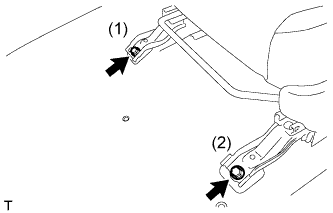
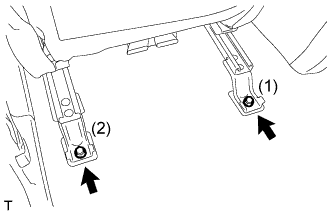
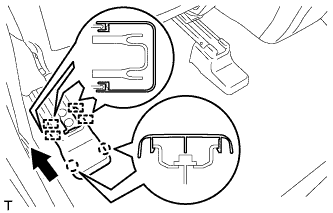
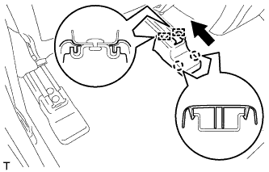
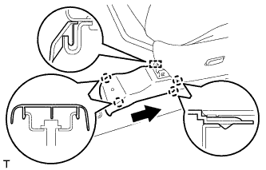
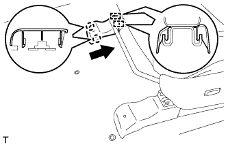

ПЕРЕДНЕЕ СИДЕНЬЕ В СБОРЕ (с ручным приводом) > УСТАНОВКА |
| 1. УСТАНОВИТЕ ПЕРЕДНЕЕ СИДЕНЬЕ В СБОРЕ |
Установите переднее сиденье в сборе в салон.
Подсоедините разъемы жгутов проводов сиденья под сиденьем.
Временно закрепите переднее сиденье в сборе 4 болтами.
С помощью ручки регулировки направляющих сиденья переместите сиденье в крайнее заднее положение.
|  |
Затягивайте болты в порядке, указанном на рисунке.
С помощью ручки регулировки направляющих сиденья переместите сиденье в крайнее переднее положение.
|  |
Затягивайте болты в порядке, указанном на рисунке.
| 2. УСТАНОВИТЕ ЛЕВЫЙ ЩИТОК НАПРАВЛЯЮЩЕЙ СИДЕНЬЯ |
|  |
Переместите щиток в направлении, указанном на рисунке стрелкой, чтобы ввести в зацепление 4 направляющих.
Введите в зацепление 2 захвата, чтобы установить крышку.
| 3. УСТАНОВИТЕ ЩИТОК КРОНШТЕЙНА ВНУТРЕННЕЙ НАПРАВЛЯЮЩЕЙ ЛЕВОГО СИДЕНЬЯ |
|  |
Переместите щиток в направлении, указанном на рисунке стрелкой, чтобы ввести в зацепление 2 направляющие.
Введите в зацепление 2 захвата, чтобы установить крышку.
| 4. УСТАНОВИТЕ ПЕРЕДНИЙ ЩИТОК КРОНШТЕЙНА НАРУЖНОЙ НАПРАВЛЯЮЩЕЙ ЛЕВОГО СИДЕНЬЯ |
С помощью ручки регулировки направляющих сиденья переместите сиденье в крайнее заднее положение.
|  |
Переместите щиток в направлении, указанном на рисунке стрелкой, чтобы ввести в зацепление 2 захвата и направляющую.
Введите в зацепление 2 захвата, чтобы установить крышку.
| 5. УСТАНОВИТЕ ПЕРЕДНИЙ ЩИТОК КРОНШТЕЙНА ВНУТРЕННЕЙ НАПРАВЛЯЮЩЕЙ ЛЕВОГО СИДЕНЬЯ |
|  |
Переместите щиток в направлении, указанном на рисунке стрелкой, чтобы ввести в зацепление 2 направляющие.
Введите в зацепление 2 захвата, чтобы закрепить щиток.
| 6. УСТАНОВИТЕ ПОДГОЛОВНИК ПЕРЕДНЕГО СИДЕНЬЯ В СБОРЕ |
Установите подголовник переднего сиденья.
| 7. ПОДСОЕДИНИТЕ ПРОВОД К ОТРИЦАТЕЛЬНОМУ ВЫВОДУ АККУМУЛЯТОРНОЙ БАТАРЕИ |
| 8. ПРОВЕРЬТЕ КОНТРОЛЬНУЮ ЛАМПУ АВАРИЙНОГО СОСТОЯНИЯ SRS |
Проверьте контрольную лампу аварийного состояния SRS (Нажмите здесь).
| 9. ПРОВЕРЬТЕ ПЕРЕДНЕЕ СИДЕНЬЕ В СБОРЕ |
Для моделей с системой подогрева сидений:
Проверьте работу подогревателя сиденья.
Установите замок зажигания в положение ON (ВКЛ).
Установите переключатель подогревателя сиденья в положение ON (ВКЛ).
Подождите не менее 5 мин и удостоверьтесь, что поверхность сиденья стала теплой.